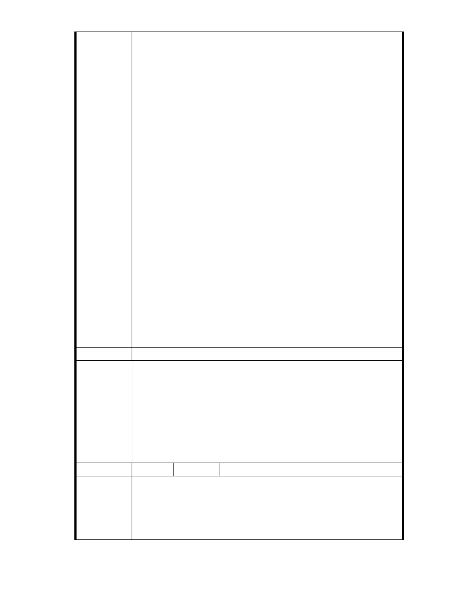

四、依據 台北市政府都市計畫委員會 94 年 8 月 25 日專案小組會勘紀錄：
「三、依民國 59 年之航照圖視之，原北基地應屬大湖之一部分，對照於
中部地區水利地遭居民佔用所造成之災害，則本案原「水利地」的功能
是否仍應保留值得再做探討」，以及大湖山莊街與後方農地因北基地非法
填土後遭受多次天然災害紀錄，建議應保留原溜地目「第三類水利地」
功能，反對變更為社會福利設施，以避免妨礙都市排水。
五、依據台北市政府發展局在民國 90 年 10 月 11 日「台北市納莉颱風災
後重建推動委員會」坡地防災組的總結報告經送市長核定結論為「…保
護區及山坡地的過度開發與利用，確實是坡地災害的主要原因，也是平
地淹水的主要原因…」，故而強烈建議「…暫緩開發利用保護區（山坡
地）…」。以及台北市政府都市計畫委員會 95 年 10 月 11 日第六次專案小
組會議紀錄：「陳教授宏宇：3、本案不僅為保護區，更是座落於溝谷中
的地質敏感區，比對雞南山危險聚落之山勢，實在有諸多相似之處。發
展局也曾邀請學者、專家就本案之地質安全、水土保持、逕流沖刷、邊
坡穩定、排水措施等各項議題提出建議，很遺憾的，包括本人在內的幾
位受邀者，均很無奈的拒絕參加這種硬要以“人定勝天”技術克服一切
的方式，來背負這個個案開發的背書者」，反對變更山坡地保護區做為社
會福利設施用地。
六、本聯盟是由一群社區裡的家庭主婦、退休居民和學生所組成，大家
自掏腰包捐出買菜錢、退休金、和打工賺來的零用錢，自主組成，只希
望能用一己微薄之力希望能守護內湖珍貴的山水和我們深愛的家園。請
做官的大人要真心有感的瞭解民情，不要再打官腔回覆！
七、本案均在 馬總統閣下擔任市長任內之事，懇請 馬總統閣下，能正
視台灣國土，能真愛台灣百姓蒼生，勇敢地出來說真話。懇請 監察院能
明察秋毫，不畏強權地出來主持公道。
建議辦法
一、本案申請範圍於慈濟購得前已遭填平破壞作汽車停車場使用，已長
年不具保護區之功能；目前申請方案較先前方案已大幅降低開發強
度、調整使用項目並承諾大面積滯洪設施等回饋事項，顯示申請單
市府說明
位欲改善現況之誠意。
二、相關陳情意見將納入本案審查人民意見，依法定程序辦理。
三、後續審理程序將要求申請人加強與在地區民、社會大眾，就基地現
況、規劃方案及環境助益作為等方面加強溝通。
委 員 會 決 議 同編號 1。
編號
陳情理由
134 陳情人 MA201210290517
主旨：有關「變更臺北市內湖區成功路五段大湖公園北側部分保護區及
道路用地為社會福利特定專用區主要計畫案」，基地內有二筆「國有道地
目」既成道路土地，為既成農路自然行成，長期供當地居民通行使用，
亦為後方農地、農舍唯一進出道路，不容任意廢除。
- 148 -